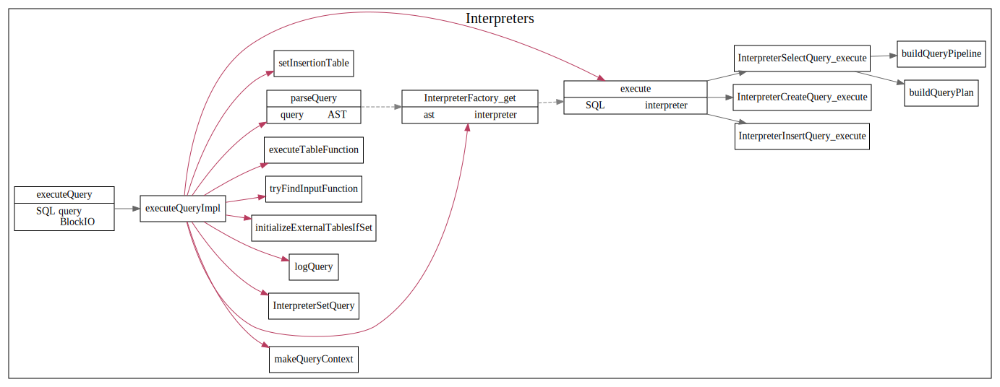
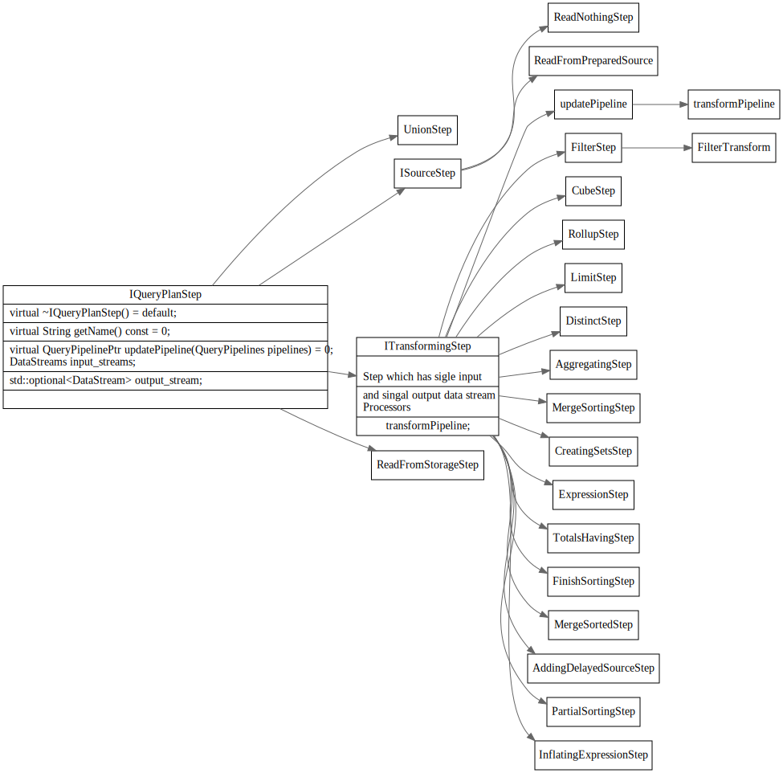

Server Main
Server main 主流程
主循环
首先监听端口号，等待客户端连接， 和客户端建立连接后,server然后不断从conn中读取packet, 解析sql语句为AST树，然后创建plan pipeline 最后执行plan，将result set通过网络发送给客户端.
SQL 解析执行流程
一条Query SQL在clickhouse中执行流程如下:
Parse SQL
解析SQL，解析为AST树，然后创建对应的pipeline plan.

SelectQuery
执行Select Query , 创建QueryPlan
QueryPlanStep

IProcessor
Processor is an element (low level building block) of a query execution pipeline. It has zero or more input ports and zero or more output ports.
Blocks of data are transferred over ports. Each port has fixed structure: names and types of columns and values of constants.
src/Processors/IProcessor.h
IProcessor 继承关系图
CK中Iprocessor的继承关系图
class IProcessor
{
protected:
InputPorts inputs;
OutputPorts outputs;
}

Executor: 执行pipeline
PipelineExecutor
使用线程池执行pipline

PullingPipelineExecutor
单线程同步执行？
/// Pulling executor for QueryPipeline. Always execute pipeline in single thread.
/// Typical usage is:
///
/// PullingPipelineExecutor executor(query_pipeline);
/// while (executor.pull(chunk))
/// ... process chunk ...

PullingAsyncPipelineExecutor
多线程异步执行
/// Asynchronous pulling executor for QueryPipeline.
/// Always creates extra thread. If query is executed in single thread, use PullingPipelineExecutor.
/// Typical usage is:
///
/// PullingAsyncPipelineExecutor executor(query_pipeline);
/// while (executor.pull(chunk, timeout))
/// ... process chunk ...

IBlockInputStream
PipelineExecutingBlockInputStream
封装了PullingPipelineExecutor和PullingAsyncPipelineExecutor, 实现了IBlockInputStream接口
AsynchronousBlockInputStream
在另外一个线程中执行inner BlockInputStream
/** Executes another BlockInputStream in a separate thread.
* This serves two purposes:
* 1. Allows you to make the different stages of the query execution pipeline work in parallel.
* 2. Allows you not to wait until the data is ready, and periodically check their readiness without blocking.
* This is necessary, for example, so that during the waiting period you can check if a packet
* has come over the network with a request to interrupt the execution of the query.
* It also allows you to execute multiple queries at the same time.
*/

BlockIO
block-io getInputStream，读数据时执行plan